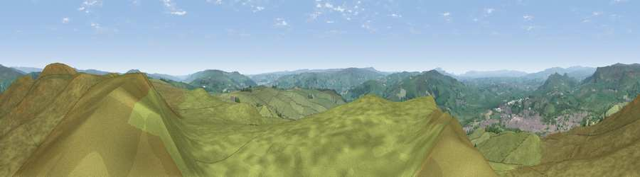

Viewpoint near Low Bradley
#7865 in England · top 6% of its area beats it · near Low Bradley · open accessWhere it is
The exact computed spot (SE 01125 50475). Click the marker for map links.
Public access: this spot lies on mapped open-access land (CRoW Act 2000) — you may roam here on foot. Computed from Natural England's CRoW access layer and OpenStreetMap rights of way — not the legal definitive map. Always verify locally.
The view, rendered

A 360° render of this exact spot computed from the terrain model, tree cover and land cover — summer colours, afternoon light, calibrated against photographs of famous viewpoints. Real trees, hedges and buildings will differ in detail.
The panorama
Grey silhouette: terrain skyline in each direction (720 bearings, Earth curvature and refraction included). Dashed green: skyline with trees (+15 m) and buildings (+8 m) as obstacles. Blue strip: how far the ground is visible on each bearing.
Where the view opens
Wedge length = distance to the farthest visible ground on that bearing (vegetation-aware). Rings at 10, 25 and 50 km.
What fills the view
88% grassland · 7% woodland · 4% built-up ·
Angular shares of the visible panorama (visual magnitude), not map area. Landscape diversity 0.20 (0–1 Shannon).
Key numbers
More beautiful places nearby
The staircase of upgrades: each row has a higher view potential than everything closer. Driving times are estimates from straight-line distance, calibrated against real road routing — check an actual route before setting out.
| Place | Direction | Drive | Score |
|---|---|---|---|
| Viewpoint near Skipton | NE · 1 km | ~2 min | 68.0 |
| Viewpoint near Embsay | NNW · 6 km | ~13 min | 74.5 |
| Cracoe Fell | NNW · 9 km | ~17 min | 75.1 |
| Viewpoint near Bewerley | NE · 18 km | ~31 min | 75.7 |
| Viewpoint near Bewerley | NE · 18 km | ~31 min | 76.8 |
| Viewpoint near Otley | ESE · 20 km | ~34 min | 77.5 |
| Little Ingleborough | NW · 35 km | ~54 min | 78.8 |
| Viewpoint near Ingleton | NW · 36 km | ~55 min | 79.5 |
53.95037, -1.98435 · source: screening · position refined by local search. Computed location — check access rights before visiting.